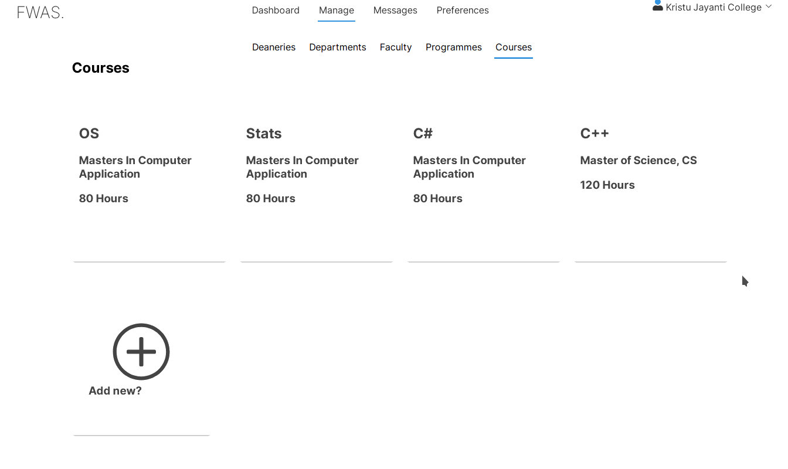

Proficiency
I am proficient in .NET Core, especially ASP.NET Core and Blazor. I have done many projects in .NET and C#, and these are one of my strongest fields.
I started my coding journey in Visual Basic, mostly as a hobby project, and developed a few small VB6 applications, one being a small music player based on Windows API. I learnt Java soon in my 10th curriculum, and further
learnt a lot of Java, making Java as the first programming language that I actively used OOPs concepts in. I am quite familiar with OOPs concepts and how Java does it, and started with GUI programming in Java. I learnt Java Swing, and
JavaFX over the course. Since JavaFX is best done with maven, I picked up a lot of maven in this process. I have also experimented with C++, Kotlin, Python, and JavaScript.
Today, I am familiar with C# and the .NET Core ecosystem, Java, JavaScript, Web Designing, and good old C. You can take a look at my GitHub: cruciformhawk7.

Faculty Workload Allocation System (FWAS)
Frontend for FWAS Server using Blazor. Most of the components designed from scratch. Uses REST Service to communicate with the backend API Server. Features include Caching, micro-service ready architecture, and a neat dynamic UI.